<!DOCTYPE html>
<html>

<head>
  <title>Shape matching task_exp_Helen Liu</title>
  <!-- 在这里load所有script里需要调用的插件 -->
  <script src="../jspsych.js"></script>
  <script src="../plugins/jspsych-fullscreen.js"></script>
  <script src="../plugins/jspsych-preload.js"></script>
  <script src="../plugins/jspsych-instructions.js"></script>
  <script src="../plugins/jspsych-call-function.js"></script>
  <script src="../plugins/jspsych-html-keyboard-response.js"></script>
  <script src="../plugins/jspsych-html-button-response.js"></script>
  <script src="../plugins/jspsych-image-keyboard-response.js"></script>
  <script src="https://cdn.staticfile.org/jquery/1.10.2/jquery.min.js"></script>
  <!-- survey部分用到的插件 -->
  <script src="../plugins/jspsych-survey-html-form.js"></script>
  <!-- psychophysics插件，用于同时呈现图片文字 -->
  <script src="../jspsych-psychophysics-2.3.4/jspsych-psychophysics.js"></script>
  <link rel="stylesheet" href="../css/jspsych.css">

  <head>
    <style>
      body {
        background-color: rgb(128, 128, 128);
        color: white;
      }
    </style>
  </head>

</head>

<body></body>
<script>
  /* 写在前面 */

  /* 目前待解决问题 */
  //储存机器信息

  /* 根据自己的实验，需要进行的修改地方 check list */
  //1.头部：images和texts那里，实验用到的图片，文字。按键那里，实验用到的按键。 
  //2.实验指导语相应部分，练习重复时的指导语。注意修改呈现的图片。
  //3.定义一个bin的match/non-match tirals，和相应的正确按键
  //4.在练习和正式试次里的.last()修改
  //5.bin循环次数设置
  //6.blocks数量设置

  /* 以下部分是实验代码 */

  /* create timeline */
  var timeline = [];

  // 进入全屏 
  var fullscreen_trial = {
    type: 'fullscreen',
    fullscreen_mode: true,
    message: "<p style = 'color : white'>实验需要全屏模式，实验期间请勿退出全屏。</p >",
    button_label: "点击这里进入全屏"
  }
  timeline.push(fullscreen_trial);

  /* define variable & preload */
  //实验用到的图片，文字，设定参数都放这里
  const images = [ // All the images used in here 图片
    './img/Tri.png',
    './img/Cir.png',
    './img/Squ.png',
  ];
  // Preloading 预加载图片
  const preload = {
    type: 'preload',
    images: images,
  }
  timeline.push(preload);

  // All the labels used in experiment 实验用到的标签名称
  var texts = ["三角",
    "圆形",
    "方形"
  ];
  // define keyboard response 实验用到的具体的按键
  var key = ["f",
    "j"
  ];
  // define accuracy baseline  参数：练习阶段正确率要求 
  let acc = 70;

  /* define welcome message trial */
  var welcome = {
    type: "html-keyboard-response",
    stimulus: `
     <p>您好，欢迎参加本次实验。</p>
     <p>为充分保障您的权利，请确保你已经知晓并同意《参与实验同意书》以及《数据公开知情同意书》。</p>
     <p>如果你未见过上述内容，请咨询实验员。</p>
     <p>果您选择继续实验，则表示您已经清楚两份知情同意书的内容并同意。</p>
     <p> 按任意键至下页。</p>
     `,
    choices: jsPsych.ALL_KEYS,
  };
  timeline.push(welcome);

  // instruction for basic information collection
  var basic_information = {
    type: "html-keyboard-response",
    stimulus: `
     <p>本实验首先需要您填写一些基本个人信息。</p>
     <p> 按任意键至下页。</p>
     `,
    choices: jsPsych.ALL_KEYS,
  };
  timeline.push(basic_information);
</script>

<script type="text/javascript">
  /* create timeline */
  var timeline = [];

  /* basic data collection instructions trial 被试基本信息收集 */
  var information = [{
    // 实验被试信息收集
    type: "call-function", //探测被试显示器数据
    func: function () {
      if ($(window).outerHeight() < 500) {
        alert("你设备不支持实验，请进入全屏模式。若已进入全屏，请换一台高分辨率的设备，谢谢。");
        window.location = "";
      }
    }
  }, {
    type: "survey-html-form",
    preamble: "<p style =' color : white'>你的实验编号是是</p>",
    html: function () {
      let data = localStorage.getItem(info["subj_idx"]) ? JSON.parse(localStorage.getItem(info["subj_idx"]))["Name"] : "";
      return "<p><input name='Q0' type='text' value='" + data + "' required/></p>";
    },
    button_label: "继续",
    on_finish: function (data) {
      info["Name"] = data.response.Q0;
    }
  }, {
    type: "html-button-response",
    stimulus: "<p style = 'color : white'>你的性别</p>",
    choices: ['男', '女', '其他'],
    on_finish: function (data) {
      info["Sex"] = data.response == 0 ? "Male" : (data.response == 1 ? "Female" : "Other")
    }
  }, {
    type: "survey-html-form",
    preamble: "<p style = 'color : white'>你的出生年</p>",
    html: function () {
      let data = localStorage.getItem(info["subj_idx"]) ? JSON.parse(localStorage.getItem(info["subj_idx"]))["BirthYear"] : "";
      return `<p>
        <input name="Q0" type="number" value=${data} placeholder="1900~2020" min=1900 max=2020 oninput="if(value.length>4) value=value.slice(0,4)" required />
        </p>`
    },
    button_label: '继续',
    on_finish: function (data) {
      info["BirthYear"] = data.response.Q0;
    }
  }, {
    type: "survey-html-form",
    preamble: "<p style = 'color : white'>您的教育经历是</p>",
    html: function () {
      return `
                <p><select name="Q0" size=10>
                <option value=1>小学以下</option>
                <option value=2>小学</option>
                <option value=3>初中</option>
                <option value=4>高中</option>
                <option value=5>大学</option>
                <option value=6>硕士</option>
                <option value=7>博士</option>
                <option value=8>其他</option>
                </select></p>`
    },
    on_load: function () {
      $("option[value=" + (["below primary school", "primary school", "junior middle school", "high school", "university", "master", "doctor", "other"].indexOf(localStorage.getItem(info["subj_idx"]) ? JSON.parse(localStorage.getItem(info["subj_idx"]))["Education"] : "") + 1) + "]").attr("selected", true);
    },
    button_label: '继续',
    on_finish: function (data) {
      let edu = ["below primary school", "primary school", "junior middle school", "high school", "university", "master", "doctor", "other"];

      info["Education"] = edu[parseInt(data.response.Q0) - 1];
    }
  }];
  timeline.push({
    timeline: information,
  });
</script>

<script>
  //设置根据屏幕控制显示图形大小方位一致
  let scale = Math.min($(document).width() / 1440, $(document).height() / 900);
  $(window).resize(function () {
    scale = Math.min($(document).width() / 1440, $(document).height() / 900);
  });

  var timeline = [];
  var info = [];
  /* define instructions trial */
  var instructions = {
    type: "instructions",
    pages: ['<p>实验说明：</p><p>您好，欢迎参加本次实验。本次实验大约需要10分钟完成。</p>',
      '<p>任务概况：</p><p>本次实验您需要完成知觉匹配任务。</p><p>您将学习以下几种几何图形与不同标签的对应关系。</p>',
      '<p>具体来说，在实验中，您需要注视电脑屏幕的中央及屏幕上出现的视觉内容。</p><p>屏幕上首先出现一个“+”，很快，“+”上方面会出现一个几何图形中，下方会出现文字信息。</p>',
      '<p>接下来请您努力记下如下图形与文字的对应关系</p>',
      '</img>' + '<p>三角</p>',
      '</img>' + '<p>圆形</p>',
      '</img>' + '<p>方形</p>',
      '<p>您的任务是判断几何图形与图形名称或文字标签是否匹配：</p><p>当出现的图形与下方的名称一致时请按<strong>“f”</strong>键，否则按<strong>“j”</strong>键。</p>',
      '<p>完成匹配任务的练习之后，您将完成3组匹配任务，每组包括72次按键反应，每组完成后会有休息。</p><p>完成一组任务大约需要3分钟，整个实验将持续大约10分钟。</p>',
      '<p>如果对本实验还有不清楚之处，请立即向实验员咨询。</p>',
      '<p> 如果你明白了规则，请点击继续，开始匹配任务的练习。</p>',
    ],
    show_clickable_nav: true,
    show_page_number: true,
    button_label_previous: '返回',
    button_label_next: '继续',
    on_finish: function () {
      $("body").css("cursor", "none");
    } //鼠标消失术，放在要消失鼠标的前一个事件里
  }
  timeline.push(instructions);

  /* define practice 练习阶段 */
  var practice = {
    timeline: [
      {
        type: 'psychophysics',
        background_color: "grey",
        stimuli: [
          {
            obj_type: 'cross', // fixation
            startX: "center", // location of the cross's center in the canvas
            startY: "center",
            line_length: 62.5 * scale, // pixels 视角：0.8° x 0.8°

            line_width: 5 * scale,
            line_color: 'white', // You can use the HTML color name instead of the HEX color.
            show_start_time: 500,
            show_end_time: 1000
          },
          {
            obj_type: 'image',
            file: jsPsych.timelineVariable('Image'),
            startX: "center", // location of the cross's center in the canvas
            startY: -165.29 * scale, //图形和文字距离 与加号等距
            font: (50).toString() + "px 'Arial'",
            text_color: 'white',
            show_start_time: 1000, // ms after the start of the trial
            show_end_time: 1100,
            scale: 0.6456640625 * scale, // 调整图片大小 视角：3.8° x 3.8°
            origin_center: true
          },
          {
            obj_type: 'text',
            file: jsPsych.timelineVariable("word"),
            startX: "center",
            startY: 165.29 * scale, //图形和文字距离 与加号等距
            content: function () {
              return jsPsych.timelineVariable("word", true);
            },
            font: `${69.58 * scale}px 'Arial'`, //字体和颜色设置 文字视角：3.6° x 1.6°

            text_color: 'white',
            show_start_time: 1000, // ms after the start of the trial
            show_end_time: 1100,
            origin_center: true
          }
        ],
        choices: ['f', 'j'], // The participant can respond to the stimuli using the 'f' or 'j' key.
        response_start_time: 1000, // 定义被试可以开始反应时间
        // 如果下方需要提示按键的话：
        //canvas_height: 700, prompt: '一致时请按f键，否则按j键.',
        data: jsPsych.timelineVariable("identify"),
        // 记录下反应，以及反应是正确还是错误：on_finish function
        on_finish: function (data) {
          data.correct_response = jsPsych.timelineVariable('identify', true);//定义正确的按键反应
          data.correct = data.correct_response == data.key_press // 输出0，1/   0是错的 1是对的 
        },
        data: {
          'Image': jsPsych.timelineVariable('Image'),
          'word': jsPsych.timelineVariable('word'), // for identification of file  
        }
      },
      { // 反馈给被试判断正确错误，快慢反馈
        data: {
          screen_id: "feedback_test"
        },
        type: "html-keyboard-response",
        stimulus: function () { // 定义判断反馈
          let keypress = jsPsych.data.get().last(1).values()[0].key_press; // 被试按键
          let trial_keypress = jsPsych.data.get().last(1).values()[0].correct; //该trial正确的按键
          let time = jsPsych.data.get().last(1).values()[0].rt; //被试反应时
          if (time > 1500) { //大于1500为过慢
            return "<span class='add_' style='color:white'> 太慢! </span>"
          } else if (keypress && trial_keypress) {
            return "正确!"
          } else if (time < 200) { //小于两百为过快反应
            return "过快!"
          } else {
            return "错误!"
          }
        },
        choices: jsPsych.NO_KEYS,
        trial_duration: 300,
      }
    ],

    timeline_variables: [
      // here define one bin 
      // define match tirals here  2 x match 
      { Image: images[0], word: texts[0], identify: key[0] }, //identify处需要定义: 这一组的正确按键是什么
      { Image: images[1], word: texts[1], identify: key[0] },
      { Image: images[2], word: texts[2], identify: key[0] },

      { Image: images[0], word: texts[0], identify: key[0] },
      { Image: images[1], word: texts[1], identify: key[0] },
      { Image: images[2], word: texts[2], identify: key[0] },

      //define non-match trials here  2 total sets of non-match 
      { Image: images[0], word: texts[1], identify: key[1] },
      { Image: images[1], word: texts[2], identify: key[1] },
      { Image: images[2], word: texts[0], identify: key[1] },

      { Image: images[0], word: texts[2], identify: key[1] },
      { Image: images[1], word: texts[0], identify: key[1] },
      { Image: images[2], word: texts[1], identify: key[1] },

    ],
    randomize_order: true, // order randomized 随机呈现 
    sample: {
      type: 'fixed-repetitions',
      size: 1, // 1 repetitions of each trial for practice 
    },
    on_finish: function () {
      $("body").css("cursor", "default"); //鼠标出现
    }
  }

  /* feedback for cotinue practice */
  var feedback = {
    type: "html-keyboard-response",
    stimulus: function () {
      let trials = jsPsych.data.get().filter(
        [{ correct: true }, { correct: false }]
      ).last(12); // 运行逻辑：先挑出data里的所有的correct：true/false的数据行，成为新的数组，然后对倒数的某几组进行计算
      //这里填入timeline_variables里面的trial数量
      let correct_trials = trials.filter({
        correct: true
      });
      let accuracy = Math.round(correct_trials.count() / trials.count() * 100);
      let rt = Math.round(correct_trials.select('rt').mean());
      return "<style>.context{color:white; font-size: 30px;}</style>\
                            <div><p class='context'>你正确回答了" + accuracy + "% 的试次。</p>" +
        "<p class='context'>你的平均反应时为" + rt + "毫秒。</p>";
    }
  }

  var feedback_continue_practice = { //在这里呈现文字recap，让被试再记一下
    type: "instructions",
    pages: ['<p>您的正确率未达到练习要求。</p>',
      '<p>请您努力记下如下匹配对应关系，再次进行练习。</p>',
      '</img>' + '<p>三角</p>',
      '</img>' + '<p>圆形</p>',
      '</img>' + '<p>方形</p>',
      '<p>当出现的图形与下方的名称一致时请按<strong>“f”</strong>键，否则按<strong>“j”</strong>键。</p>',
      '<p> 如果你明白了规则，请按任意键继续练习。</p>',
    ],
    show_clickable_nav: true,
    show_page_number: true,
    button_label_previous: '返回',
    button_label_next: '继续',
    on_finish: function () {
      $("body").css("cursor", "none");
    }
  }

  var if_node = { //if_node 用于判断是否呈现feedback，feedback_continue_practice
    timeline: [feedback, feedback_continue_practice],
    conditional_function: function (data) {
      var trials = jsPsych.data.get().filter(
        [{ correct: true }, { correct: false }]
      ).last(12);//这里注意：只需要上一组的练习数据，而不是所有的数据！！ 如何实现：.last() 取data最后的几组数据（上一组练习数据）
      var correct_trials = trials.filter({
        correct: true
      });
      var accuracy = Math.round(correct_trials.count() / trials.count() * 100);
      if (accuracy >= acc) {
        return false;//达标就skip掉feedback_continue_practice这一段
      } else if (accuracy < acc) { //没达标反馈feedback,feedback_continue_practice
        return true;
      }
    }
  }
  timeline.push(if_node);

  //loop_node用于判断是否能进入正式实验，以及给予何种反馈
  var loop_node = {
    timeline: [practice, if_node],
    loop_function: function () {
      var trials = jsPsych.data.get().filter(
        [{ correct: true }, { correct: false }]
      ).last(12);//记得改，取数据
      var correct_trials = trials.filter({
        correct: true
      });
      var accuracy = Math.round(correct_trials.count() / trials.count() * 100);
      if (accuracy >= acc) {
        return false;//end 进入正式实验前的反馈
      } else if (accuracy < acc) { // repeat
        return true;
      }
    }
  }
  timeline.push(loop_node);

  /* feedback for get into formal exp */
  var feedback_goformal = {
    type: "html-keyboard-response",
    stimulus: function () {
      let trials = jsPsych.data.get().filter(
        [{ correct: true }, { correct: false }]
      ).last(12);
      let correct_trials = trials.filter({
        correct: true
      });
      let accuracy = Math.round(correct_trials.count() / trials.count() * 100);
      let rt = Math.round(correct_trials.select('rt').mean());
      return "<style>.context{color:white; font-size: 30px;}</style>\
                            <div><p class='context'>你正确回答了" + accuracy + "% 的试次。</p>" +
        "<p class='context'>你的平均反应时为" + rt + "毫秒。</p>" +
        "<p class='context'>恭喜你完成练习。按任意键进入正式实验。</p></div>";
    },
    on_finish: function () {
      $("body").css("cursor", "none");
    }
  }
  timeline.push(feedback_goformal);

  /* define trials in foraml exp 正式实验 */
  //one block 
  var formal = {
    timeline: [
      {
        type: 'psychophysics',
        background_color: "grey",
        stimuli: [
          {
            obj_type: 'cross', // fixation
            startX: "center", // location of the cross's center in the canvas
            startY: "center",
            line_length: 62.5 * scale, // pixels 视角：0.8° x 0.8°

            line_width: 5 * scale,
            line_color: 'white', // You can use the HTML color name instead of the HEX color.
            show_start_time: 500,
            show_end_time: 1000
          },
          {
            obj_type: 'image',
            file: jsPsych.timelineVariable('Image'),
            startX: "center", // location of the cross's center in the canvas
            startY: -165.29 * scale, //图形和文字距离 与加号等距
            font: (50).toString() + "px 'Arial'",
            text_color: 'white',
            show_start_time: 1000, // ms after the start of the trial
            show_end_time: 1100,
            scale: 0.6456640625 * scale, // 调整图片大小 视角：3.8° x 3.8°
            origin_center: true
          },
          {
            obj_type: 'text',
            file: jsPsych.timelineVariable("word"),
            startX: "center",
            startY: 165.29 * scale, //图形和文字距离 与加号等距
            content: function () {
              return jsPsych.timelineVariable("word", true);
            },
            font: `${69.58 * scale}px 'Arial'`, //字体和颜色设置 文字视角：3.6° x 1.6°

            text_color: 'white',
            show_start_time: 1000, // ms after the start of the trial
            show_end_time: 1100,
            origin_center: true
          }
        ],
        choices: ['f', 'j'], // The participant can respond to the stimuli using the 'f' or 'j' key.
        response_start_time: 1000, // 被试可以开始反应时间
        //canvas_height: 500, // 如果下方需要提示按键
        //prompt: '一致时请按f键，否则按j键.',
        data: jsPsych.timelineVariable("identify"),
        // 加反应正确还是错误 on_finish function
        on_finish: function (data) {
          data.correct_response = jsPsych.timelineVariable('identify', true);//定义正确的按键反应
          data.correct = data.correct_response == data.key_press // 输出0，1/   0是错的 1是对的
        },
        data: {
          'Image': jsPsych.timelineVariable('Image'),
          'word': jsPsych.timelineVariable('word'),
          // 如果需要加反应正确还是错误：on_finish function
          on_finish: function (data) {
          } // for identification of file  
        }
      }],

    timeline_variables: [
      //define one bin
      // define match tirals here： 3 matches
      { Image: images[0], word: texts[0], identify: key[0] }, //identify处需要定义: 这一组的正确按键是什么
      { Image: images[1], word: texts[1], identify: key[0] },
      { Image: images[2], word: texts[2], identify: key[0] },

      { Image: images[0], word: texts[0], identify: key[0] },
      { Image: images[1], word: texts[1], identify: key[0] },
      { Image: images[2], word: texts[2], identify: key[0] },

      //define non-match trials here  2 total sets of non-match 
      { Image: images[0], word: texts[1], identify: key[1] },
      { Image: images[1], word: texts[2], identify: key[1] },
      { Image: images[2], word: texts[0], identify: key[1] },

      { Image: images[0], word: texts[2], identify: key[1] },
      { Image: images[1], word: texts[0], identify: key[1] },
      { Image: images[2], word: texts[1], identify: key[1] },
    ],
    randomize_order: true, // order randomized 随机呈现 
    //define number of bins below
    sample: {
      type: 'fixed-repetitions',
      size: 6, // 6 repetitions of each trial
    },
    on_finish: function () {
      $("body").css("cursor", "default"); //鼠标出现
    }
  }
  timeline.push(formal);

  // feedback block 反馈被试正确率反应时
  let feedback_block = {
    type: "html-keyboard-response",
    stimulus: function () {
      // aaaaa = 1;  筛选，必须要！！！！！！！！！！！
      let trials = jsPsych.data.get().filter(
        [{ correct: true }, { correct: false }]
      ).last(72);// last()填入一个block里的trial总数
      let correct_trials = trials.filter({
        correct: true
      });
      let accuracy = Math.round(correct_trials.count() / trials.count() * 100);
      let rt = Math.round(correct_trials.select('rt').mean());
      return "<style>.context{color:white; font-size: 30px;}</style>\
                            <div><p class='context'>你正确回答了" + accuracy + "% 的试次。</p>" +
        "<p class='context'>你的平均反应时为" + rt + "毫秒。</p>" +
        "<p class='context'>请按任意键进入休息</p></div>";
    },
    on_finish: function () {
      $("body").css("cursor", "default"); //鼠标出现
    }
  };
  timeline.push(feedback_block);

  /* define rest between blocks 休息 */
  // rest 休息：加一个keyboard response 空屏呈现文字
  let rest = {
    type: 'html-button-response',
    stimulus: function () {
      let totaltrials = jsPsych.data.get().filter(
        [{ correct: true }, { correct: false }]
      );
      return `
    <p font-size: 48px; font-weight: bold;">现在是休息时间。</p>
    <p>当你结束休息后，你可以点击 “结束休息” 按钮继续实验。</p>`
      // 想优化提示被试还剩几组实验：<p>你当前还剩余${12 - blockNum}组实验</p>  blockNum 定义
    },
    choices: ["结束休息"],
    trial_duration: 60000,
    on_finish: function () {
      $("body").css("cursor", "none"); //鼠标消失
    }
  }
  timeline.push(rest);

  /* define blocks */
  var repeatblock = {
    timeline: [formal, feedback_block, rest],
    repetitions: 2  // 这里注意：填入需要重复几个block数 - 1
  };
  timeline.push(repeatblock);

  /*set up experiment finish message*/
  var finish = {
    type: "html-keyboard-response",
    stimulus: `
    <p>感谢您参加我们的实验，请按任意键下载cvs，并将下载好的csv发送给研究者。</p>
    <p>请你手动通过 ESC 键退出全屏后关闭本页面。再次感谢您参与本实验！</p>`
  };
  timeline.push(finish);

  /*experiment structure*/
  //实验流程结构 
  var timeline = [];
  timeline.push(fullscreen_trial); //全屏
  timeline.push(preload); //预加载图片
  timeline.push(welcome); //欢迎
  timeline.push(basic_information);//基本个人信息填写指导语
  timeline.push({
    timeline: information //被试基本信息收集
  });
  timeline.push(instructions); //呈现实验指导语
  timeline.push(loop_node);//练习 //判断给予哪种反馈//判断是否能进入正式实验
  timeline.push(feedback_goformal);//进入实验的反馈
  timeline.push(formal); //正式实验
  timeline.push(feedback_block); //正式实验每个block的反馈
  timeline.push(rest); //block之间的休息
  timeline.push(repeatblock); //重复block
  timeline.push(finish) //结束语

  /*start experiment*/
  jsPsych.init({
    timeline: timeline,
    on_finish: function () {
      jsPsych.data.get().localSave("csv", "data_v1.csv"); //原始数据读取和保存
    }
  });
</script>

</html>